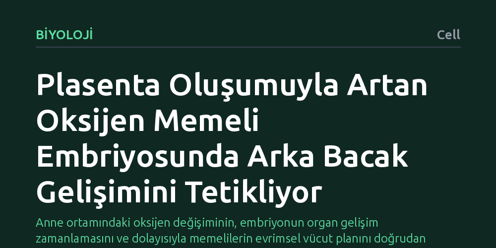

BIYOLOJI · Cell · 2026-10-13
Araştırmacılar, memeli embriyolarında arka bacak gelişiminin zamanlamasını neyin belirlediğini araştırdı. Plasenta oluştuktan sonra artan oksijen seviyesinin arka bacak gelişimini başlatan temel sinyal olduğu ve gelişimsel zamanlamayı yönettiği bulundu.
Anne ortamındaki oksijen değişiminin, embriyonun organ gelişim zamanlamasını ve dolayısıyla memelilerin evrimsel vücut planını doğrudan yönlendirebildiğini gösteriyor.

Gelişim biyolojisinin en temel sorularından biri, farklı organların hangi sırayla ve ne zaman gelişmeye başladığıdır. Bir canlının vücut planı şekillenirken bazı yapılar erken, bazıları ise daha geç ortaya çıkar. Memelilerde ön bacaklar ile arka bacakların oluşum başlangıcı arasındaki bu zaman farkı, yani gelişimsel zamanlama kayması, uzun süredir genetik ve çevresel etkenlerin nasıl bir etkileşim içinde olduğu sorusunu canlı tutmaktadır.
Özellikle rahim içinde büyüyen memeli embriyolarının dış çevreyle olan bağı plasenta aracılığıyla kurulur. Ancak anne ortamından gelen fizyolojik değişimlerin, genetik programın zamanlamasını doğrudan tetikleyip tetikleyemeyeceği belirsizliğini koruyordu. Bu soru, hem memelilerin evrimsel çeşitliliğini anlamak hem de uzuv gelişiminin temel mekanizmalarını çözmek açısından büyük önem taşıyor.
Araştırmacılar, memeli embriyolarının anne karnındaki kritik bir dönüm noktasına odaklandı: plasentanın oluşumu ve işlevsel hale gelmesi. Plasenta kurulmadan önce embriyo nispeten düşük oksijenli bir ortamda gelişirken, işlevsel bir plasentanın devreye girmesiyle birlikte dokulara ulaşan oksijen miktarında belirgin bir artış yaşanır.
Çalışmada bu oksijen sıçramasının embriyonik dokulardaki yansımaları ve uzuv oluşumu üzerindeki etkileri gelişimsel biyoloji yöntemleriyle incelendi. Farklı gelişim evrelerindeki embriyolar izlenerek, oksijen düzeylerindeki bu yükselişin hangi dokularda bacak gelişimini başlatan süreçleri devreye soktuğu adım adım takip edildi.
Elde edilen veriler, plasenta oluştuktan sonra embriyonun karşılaştığı artan oksijen seviyesinin arka bacak oluşumunu başlatan doğrudan bir tetikleyici olduğunu gösterdi. Ön bacaklar daha erken evrelerde oluşurken, arka bacakların gelişim programının devreye girmesi plasentanın sağladığı bu yüksek oksijen ortamına bağımlıydı.
Bu bulgu, organ gelişiminin sadece kapalı bir iç genetik saatle değil, anne tarafından sağlanan fizyolojik bir eşikle senkronize edildiğini ortaya koydu. Oksijen seviyesindeki yükselme, gelişimsel zamanlamayı kontrol ederek arka bacak gelişiminin tam olarak ne zaman başlayacağını belirleyen bir anahtar görevi görüyordu.
Bu sonuçlar, anne ortamındaki fizyolojik değişimlerin evrimsel süreçte vücut planının şekillenmesinde nasıl belirleyici olabileceğini somut bir mekanizmayla açıklıyor. Memelilerde plasentanın evrimi, sadece embriyonun beslenmesini sağlamakla kalmamış; aynı zamanda vücut uzuvlarının ne zaman ve nasıl büyüyeceğini de yeniden düzenlemiştir.
Yine de bu bulguların laboratuvar ortamında incelenen embriyo modellerine dayandığını ve farklı memeli türlerinde plasenta yapısının çeşitlilik gösterebileceğini akılda tutmak gerekir. Buna karşın çalışma, çevresel bir etken olan oksijenin gelişimsel zamanlamayı yönlendirmedeki kilit rolünü açık bir biçimde ortaya koymaktadır.